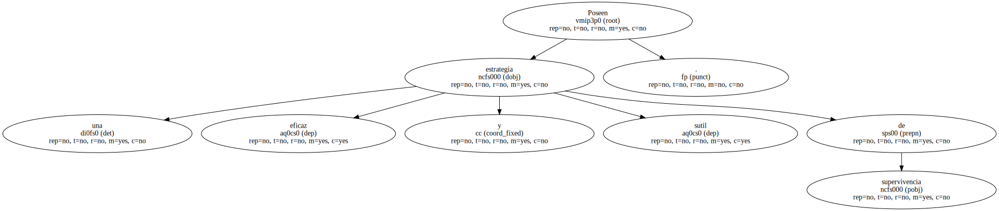
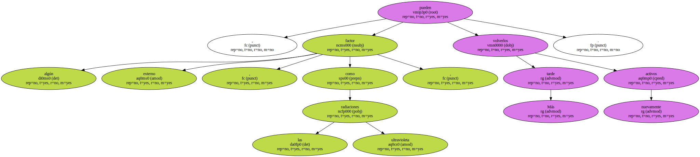
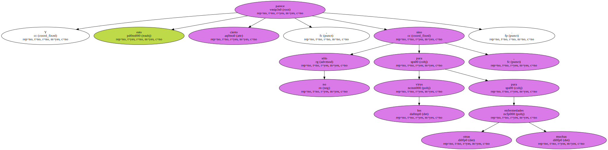
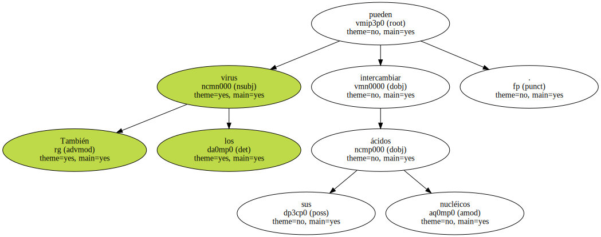
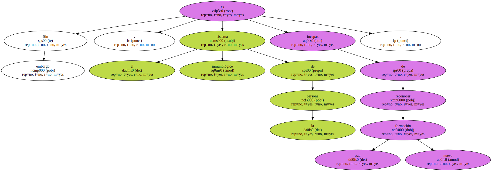

Poseen una eficaz y sutil estrategia de supervivencia.
Algunos son capaces de dormir en nuestro cuerpo durante largos años , sin ser advertidos por el sistema inmunológico , hasta que llega el momento propicio para desencadenar el ataque.

Los virus del herpes son capaces incluso de sumergirse , a pesar de que se haya desencadenado ya la infección , porque las condiciones no les sean favorables.
Más tarde , algún factor externo , como las radiaciones ultravioleta , pueden volverlos nuevamente activos.
Un grupo de investigadores británicos ha llegado a asegurar que los virus se aprovechan de los estados de ánimo de los individuos.
Y esto parece cierto , no sólo para los virus , sino para otras muchas enfermedades.
El caso es que una persona introvertida pescará un resfriado o un catarro mucho antes que otra extrovertida , como pudieron demostrar los británicos por la cantidad de virus encontrados en la mucosa.
También los virus pueden intercambiar sus ácidos nucléicos.
De hecho , la infección provocada por dos cepas emparentadas conduce generalmente a la formación de un tercer tipo de virus que posee las características nocivas de las dos variedades primitivas.
Sin embargo , el sistema inmunológico de la persona es incapaz de reconocer esta nueva formación.
Una imitación de estas características es la que debió causar la gran epidemia gripal el año 1918 , durante la cual murieron más de veinte millones de personas.